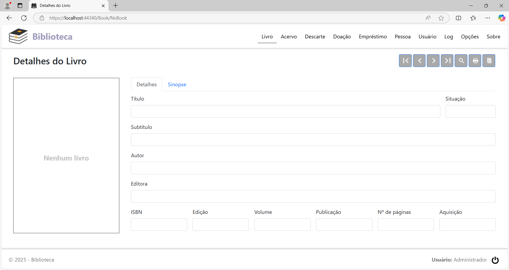
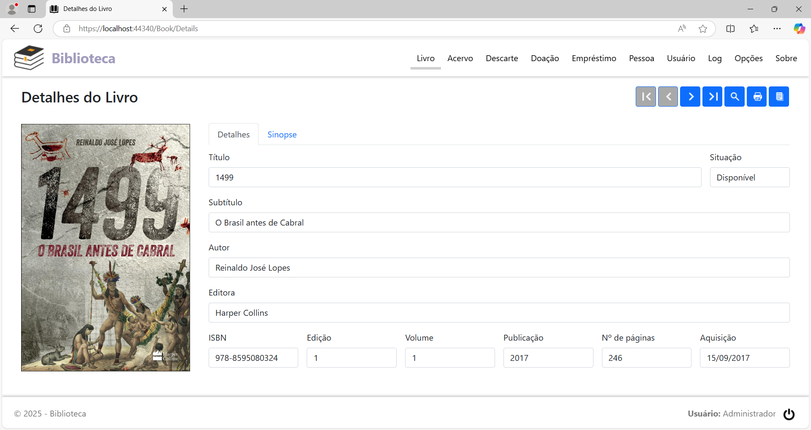
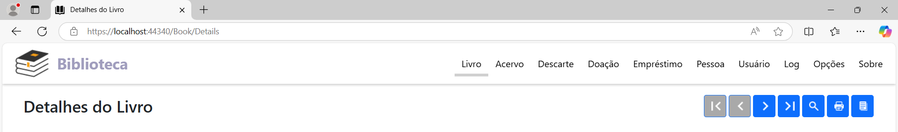
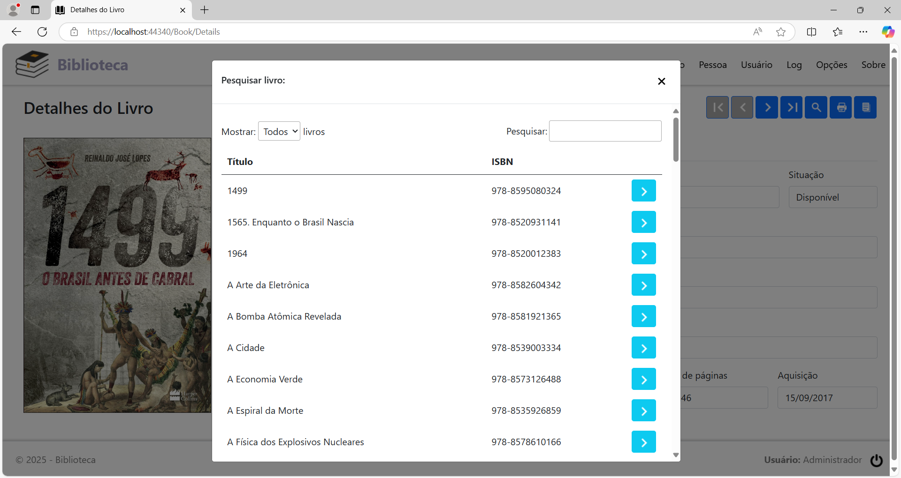

Detalhes do Livro
Clicando na opção de menu Livro, ou no logotipo da aplicação, ou no botão Detalhes do livro (…), na última coluna nas listas das páginas Livros no Acervo, Livros Descartados, Livros Doados e Empréstimos, será exibida a página Detalhes do Livro. Nesta página, são exibidos todos os dados de um livro, como título, subtítulo, autor, ISBN, bem como é possível navegar pela lista de todos os livros cadastrados através do menu de navegação, à esquerda da página.
No primeiro acesso ao sistema, a página Detalhes do Livro terá este aspecto:

Estando assim, significa que ainda não há nenhum livro cadastrado. Após o cadastro do primeiro livro e dos livros subsequentes, a página habilita os controles na barra de navegação e mostra os dados do livro em exibição:

À direita da imagem de capa, na guia Detalhes, são exibidos os seguintes dados sobre o livro:
Título: Título do livro.
Subtítulo: Subtítulo do livro.
Autor: Autor(es) do livro.
Editora: Editora do livro.
ISBN: Número do ISBN (International Standard Book Number) do livro.
Edição: Número da edição do livro.
Volume: Número do volume do livro.
Publicação: Ano de publicação do livro.
Nº de páginas: Número de páginas do livro.
Aquisição: Data da aquisição do livro.
Na guia Sinopse, é exibida a sinopse do livro ou o resumo do mesmo.
No cabeçalho da página, à direita do título, se encontra a barra de navegação. Nela estão os seguintes botões, da esquerda para a direita:

Primeiro ( |< ): Exibir o primeiro livro da lista.
Anterior ( < ): Exibir o livro anterior com relação ao que está sendo exibido.
Próximo ( > ): Exibir o próximo livro com relação ao que está sendo exibido.
Último ( >| ): Exibir o último livro da lista.
Pesquisar livro (lupa): Abre o diálogo para pesquisar um livro pelo título ou ISBN.
Imprimir livro (impressora): Imprime o relatório com os detalhes do livro em exibição.
Imprimir livros cadastrados: Imprime o relatório de todos os livros cadastrados, estejam eles disponíveis no acervo, tenham sido descartados, doados ou estejam em posse de terceiros em empréstimo.
Se clicar no botão Pesquisar livro, será exibida a seguinte caixa de diálogo:

Digite o nome do livro ou o número do ISBN no campo Pesquisar para filtrar. Encontrado o livro, clique no botão Selecionar (seta), para carregar a página com os detalhes do mesmo.